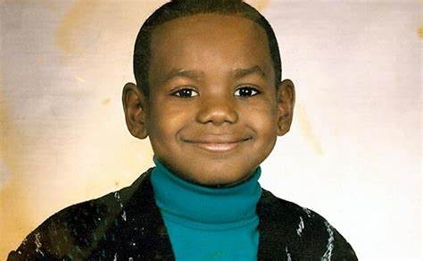
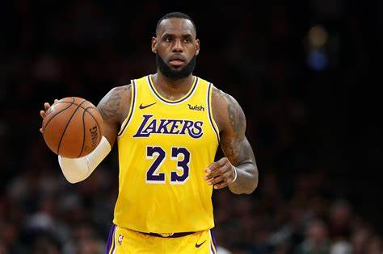

Infancia:
Desde temprana edad, LeBron mostró un gran instinto para el baloncesto. Pasaba mucho tiempo jugando con un aro y un balón que su madre Gloria le regaló. También gozaba de muy buena genética, y pese a que su madre solo medía 1,65 metros de estatura, tenía parientes que eran mucho más altos. La vida de nómada que había llevado junto a su madre impidió que LeBron pudiera tener amigos. Cuando entró al colegio le costaba hacer amigos con facilidad, ya que se sentía avergonzado de la vida familiar que había llevado.

Familia:
Cuando LeBron nació, su madre, Gloria James, tan solo tenía 16 años y su padre biológico, Anthony McClelland, exconvicto, se desentendió de su hijo desde su nacimiento. Gloria lo sacó adelante sola y sin ayuda, situación agravada por la muerte de su madre cuando LeBron apenas era un bebé. Esta circunstancia acentuó las dificultades de una familia que vivió en una constante lucha por mantenerse. Gloria no encontraba trabajo fijo y ambos pasaban de piso en piso continuamente.

Su carrera:
Firmó un contrato de 90 millones de dólares con Nike antes de debutar en la NBA. Con 18 años, James fue elegido en la primera posición del Draft de la NBA de 2003 por Cleveland Cavaliers. Con los Cavs ratificó el prometedor futuro que se labró durante su estancia en el instituto, y en su primera temporada se llevó el premio al Rookie del Año de la NBA. Desde que llegó a la liga, LeBron ha registrado muchos récords de precocidad, entre ellos, el del jugador más joven en alcanzar los 10 000, 15 000, 20 000, 25 000, 30 000 y 35 000 puntos. Desde 2005 ha sido All-Star (del que resultó tres veces MVP) y ha formado parte de los Mejores Quintetos de la NBA, siendo elegido en trece ocasiones en el Primer Quinteto. En la 2006, James terminó segundo en la votación del MVP de la NBA 2005-06. Su premio individual más importante llegó el 4 de mayo de 2009, al ser nombrado MVP de la temporada 2008-09, galardón que ganaría también en las temporadas 2009-10, 2011-12 y 2012-13. En 2012, 2013, 2016 y 2020 fue campeón de la NBA y MVP de las Finales. James, popularmente conocido como "The King", "King James" y "The Chosen One", lideró a los Cavaliers a sus primeras Finales de la NBA en 2007, donde cayeron ante San Antonio Spurs. Desde los Playoffs de 2006, Cleveland estuvo siempre presente en la fase final de la NBA hasta su salida de la franquicia en 2010. Desde su regreso, en 2014, los Cavs disputaron cuatro Finales de la NBA consecutivas, donde conquistaron su primer título como franquicia en 2016. Con la selección de baloncesto de Estados Unidos ha conseguido dos oros olímpicos en Pekín 2008 y Londres 2012 (teniendo como rival en ambas finales a la selección española) y un bronce en Atenas 2004, además de la medalla de bronce en el Campeonato Mundial de Baloncesto de 2006 en Japón.